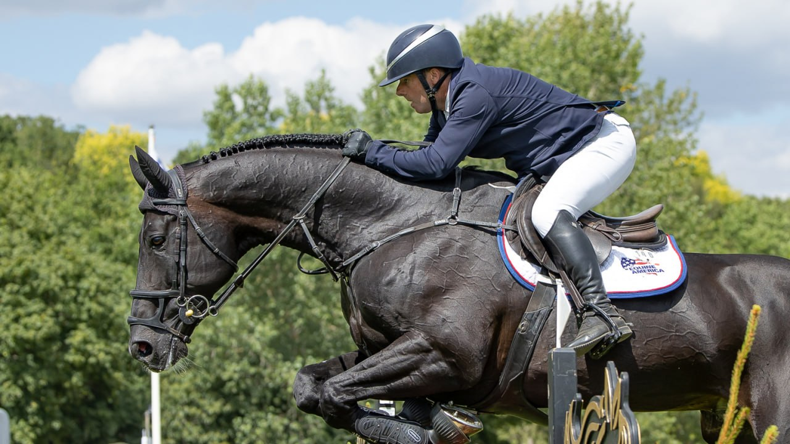

Robert Whitaker iguala a Foxhunter con tercer triunfo en la King George V Gold Cup
El jinete británico y Equine America Vermento se convirtieron en el primer binomio de la era moderna en lograr tres victorias en la prestigiosa prueba de Hickstead, igualando la hazaña del legendario Foxhunter en 1953.

Cesión editorial (Telegram)
Robert Whitaker y Equine America Vermento escribieron un nuevo capítulo en la historia del salto de obstáculos británico al conquistar por tercera vez la Al Shira'aa King George V Gold Cup en la jornada final del Agria Royal International Horse Show de Hickstead. El binomio logró esta hazaña tras sus victorias en 2023 y 2025, convirtiéndose en el primer caballo en la era moderna del deporte en alcanzar tres títulos en esta prueba.
No se veía un triple ganador desde que el legendario Foxhunter llevó a Harry Llewellyn a su tercer triunfo en 1953. Con esta victoria, Robert igualó además el palmarés de su padre John Whitaker en esta clase, quien la ganó en 1986 con Ryan's Son, en 1990 con Milton y en 1997 con Welham. Su tío Michael Whitaker suma cuatro victorias, mientras David Broome mantiene el récord con seis títulos.
Sorteado en octava posición para la primera manga, Robert produjo la primera de las cinco vueltas limpias con el hijo de Argento de 13 años, lo que le otorgó el primer turno en el desempate. En la pista acortada, el binomio repitió su recorrido sin penalizaciones en un tiempo de 43,34 segundos para marcar el ritmo a batir.
La canadiense Nicole Walker y Panter JVH fueron los siguientes, deteniendo el cronómetro en 42,07 segundos, pero un resbalón al bordear el foso alteró su ritmo y derribaron la última valla. La brasileña Stephanie Maciera, aspirando a convertirse en la segunda mujer en ganar la King George desde que la clase se abrió a ambos sexos en 2008, produjo el único otro doble cero con Novak De Kalvarie, pero cruzó la meta más de un segundo más lenta que Robert para ocupar la segunda plaza.
Jack Whitaker y Jack JL sumaron dos derribos para terminar cuartos, mientras la heroína británica de la Copa de Naciones Jessica Mendoza debió conformarse con el quinto puesto montando a Summerhouse.
"Ganarlo tres veces es increíble, ¿qué puedo decir?", declaró un emocionado Robert tras la prueba. "No tenía el mejor sorteo, y él saltó de primero en el desempate. Sé que esta pista es muy grande y abierta, y es fácil tirar una valla, así que solo quería hacer una vuelta segura. Para ser honesto, pensé que iba un poco lento, y cuando estaba limpio después de la penúltima valla, probablemente tomé más tiempo del que debía. ¡Pero dio resultado!"
Robert también rindió tributo a sus propietarios de largo plazo, Caroline y Stephen Blatchford: "Son propietarios fantásticos, y tenemos muchos caballos en desarrollo".
La jornada arrancó con un brillante uno-dos para los jinetes de los Emiratos Árabes Unidos en la final The Breen Equestrian CSIYH1*. Omar Abdul Aziz Al Marzooqi y la impresionante yegua de ocho años Biarritz Z recortaron 0,93 segundos al tiempo marcado por su compatriota Abdullah Mohd Al Marri, quien finalizó como el mejor de los caballos de siete años montando a Troy Z.
"Creo en ella, es excepcional. Creo que será una yegua súper rápida, y creo que tiene suficiente capacidad para llegar al máximo nivel también, así que estoy bastante emocionado por su futuro", afirmó Omar.
La acción del salto de obstáculos continuará en Hickstead con los Al Shira'aa British Young Horse Championships, que se celebrarán del 13 al 16 de agosto con entrada y aparcamiento gratuitos para espectadores.
— Redacción de Hípica al Día